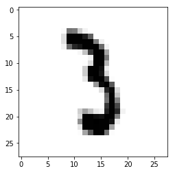

MNIST Data set
 train-images-idx3-ubyte.gz : training set images (9912422 bytes)
train-images-idx3-ubyte.gz : training set images (9912422 bytes)train-labels-idx1-ubyte.gz : training set labels (28881 bytes)
t10k-images-idx3-ubyte.gz : test set images (1648877 bytes)
t10k-labels-idx1-ubyte.gz : test set labels (4542 bytes)
source : http://yann.lecun.com/exdb/mnist/
data 분석 : 28x28x1 image
source : http://derindelimavi.blogspot.kr/2015/04/mnist-el-yazs-rakam-veri-seti.html
# MNIST data image of shape 28 * 28 = 784
X = tf.placeholder(tf.float32, [None, 784])
# 0 ~ 9 digits recognition = > 10classes
Y = tf.placeholder(tf.float32, [None, nb_classes])MNIST Data set code snippet : overview
from tensorflow.examples.tutorials.mnist import input_data
# Check out https://tensorflowkorea.gitbooks.io/tensorflow-kr/content/g3doc/tutorials/mnist/beginners/ for more information about the mnist data set
mnist = input_data.read_data_sets("MNIST_data/", one_hot = True)
...
batch_xs, batch_ys = mnist.train.next_batch(100) # 100개 data로 train
...
print("Accuracy: ", accuracy.eval(session=sess, feed_dict={X : mnist.test.images, Y : mnist.test.labels}))MNIST Data set code snippet : Reading data and set variables
from tensorflow.examples.tutorials.mnist import input_data
# Check out https://tensorflowkorea.gitbooks.io/tensorflow-kr/content/g3doc/tutorials/mnist/beginners/ for more information about the mnist dataset
mnist = input_data.read_data_sets("MNIST_data/", one_hot=True)
nb_classes = 10
# MNIST data image of shape 28 * 28 = 784
X = tf.placeholder(tf.float32, [None, 784])
# 0 - 9 digits recognition = 10 classes
Y = tf.placeholder(tf.float32, [None, nb_classes])
W = tf.Variable(tf.random_normal([784, nb_classes]))
b = tf.Variable(tf.random_normal([nb_classes]))MNIST Data set code snippet : Softmax!
# Hypothesis (using softmax)
hypothesis = tf.nn.softmax(tf.matmul(X, W) + b)
cost = tf.reduce_mean(-tf.reduce_sum(Y * tf.log(hypothesis), axis=1))
optimizer = tf.train.GradientDescentOptimizer(learning_rate=0.1).minimize(cost)
# Test model
is_correct = tf.equal(tf.argmax(hypothesis, 1), tf.arg_max(Y, 1))
# Calculate accuracy
accuracy = tf.reduce_mean(tf.cast(is_correct, tf.float32))MNIST Data set code snippet : Training epoch / batch
# parameters
training_epochs = 15
batch_size = 100 # 학습데이터가 너무 방대해서, 한 번에 얼마나 학습시킬 지를
# batch_size를 통해 결정
with tf.Session() as sess:
# Initialize TensorFlow variables
sess.run(tf.global_variables_initializer())
# Training cycle
for epoch in range(training_epochs):
avg_cost = 0
total_batch = int(mnist.train.num_examples / batch_size) # iterations 개수
for i in range(total_batch):
batch_xs, batch_ys = mnist.train.next_batch(batch_size)
c, _ = sess.run([cost, optimizer], feed_dict={X: batch_xs,
Y: batch_ys})
avg_cost += c / total_batch
print('Epoch:', '%04d' % (epoch + 1), 'cost =', '{:.9f}'.format(avg_cost))
print("Learning finished")p.s. Training epoch / batch
In the neural network terminology
- one epoch = one forward pass and one backward pass of all the training examples
- batch size = the number of training examples in one forward/backward pass. The higher the batch size, the more memory space you'll need.
- number of iterations = number of passes, each pass using [batch size] number of examples. To be clear, one pass = one forward pass + one backward pass (we do not count the forward pass and backward pass as two different passes).
Example: if you have 1000 training examples, and your batch size is 500,
then it will take 2 iterations to complete 1 epoch.
MNIST Data set code snippet : Report results on test data set
# Test the model using test sets
print("Accuracy: ", accuracy.eval(session=sess, feed_dict={X: mnist.test.images,
Y: mnist.test.labels}))위의 code에서 accuracy(or any tensor).eval에 session=sess 인자를 넘겨줄 수도 있고, sess.run()을 사용할 수 도있다. mnist의 test data를 이용하여 accuracy를 증명하는 것을 볼 수 있다.
Above code result
#result
/* print('Epoch:', '%04d' % (epoch + 1), 'cost =', '{:.9f}'.format(avg_cost)) */
Epoch: 0001 cost = 2.826302696
Epoch: 0002 cost = 1.061668970
Epoch: 0003 cost = 0.838061318
Epoch: 0004 cost = 0.733232738
Epoch: 0005 cost = 0.669279872
Epoch: 0006 cost = 0.624611815
Epoch: 0007 cost = 0.591160336
Epoch: 0008 cost = 0.563868977
Epoch: 0009 cost = 0.541745163
Epoch: 0010 cost = 0.522673563
Epoch: 0011 cost = 0.506782313
Epoch: 0012 cost = 0.492447635
Epoch: 0013 cost = 0.479955829
Epoch: 0014 cost = 0.468893664
Epoch: 0015 cost = 0.458703465
Learning finished
Accuracy: 0.8951MNIST Data set code snippet : Sample image show and prediction
import matplotlib.pyplot as plt
import random
# Get one and predict
r = random.randint(0, mnist.test.num_examples - 1)
print("Label: ", sess.run(tf.argmax(mnist.test.labels[r:r + 1], 1)))
print("Prediction: ", sess.run(tf.argmax(hypothesis, 1),
feed_dict={X: mnist.test.images[r:r + 1]}))
plt.imshow(
mnist.test.images[r:r + 1].reshape(28, 28),
cmap='Greys',
interpolation='nearest')
plt.show()result
Label: [3]
Prediction: [3]
Label: [7]
Prediction: [7]
show full code
# Lab 7 Learning rate and Evaluation
import tensorflow as tf
import random
import matplotlib.pyplot as plt
tf.set_random_seed(777) # for reproducibility
from tensorflow.examples.tutorials.mnist import input_data
# Check out https://www.tensorflow.org/get_started/mnist/beginners for
# more information about the mnist dataset
mnist = input_data.read_data_sets("MNIST_data/", one_hot=True)
nb_classes = 10
# MNIST data image of shape 28 * 28 = 784
X = tf.placeholder(tf.float32, [None, 784])
# 0 - 9 digits recognition = 10 classes
Y = tf.placeholder(tf.float32, [None, nb_classes])
W = tf.Variable(tf.random_normal([784, nb_classes]))
b = tf.Variable(tf.random_normal([nb_classes]))
# Hypothesis (using softmax)
hypothesis = tf.nn.softmax(tf.matmul(X, W) + b)
cost = tf.reduce_mean(-tf.reduce_sum(Y * tf.log(hypothesis), axis=1))
optimizer = tf.train.GradientDescentOptimizer(learning_rate=0.1).minimize(cost)
# Test model
is_correct = tf.equal(tf.arg_max(hypothesis, 1), tf.arg_max(Y, 1))
# Calculate accuracy
accuracy = tf.reduce_mean(tf.cast(is_correct, tf.float32))
# parameters
training_epochs = 15
batch_size = 100
with tf.Session() as sess:
# Initialize TensorFlow variables
sess.run(tf.global_variables_initializer())
# Training cycle
for epoch in range(training_epochs):
avg_cost = 0
total_batch = int(mnist.train.num_examples / batch_size)
for i in range(total_batch):
batch_xs, batch_ys = mnist.train.next_batch(batch_size)
c, _ = sess.run([cost, optimizer], feed_dict={
X: batch_xs, Y: batch_ys})
avg_cost += c / total_batch
print('Epoch:', '%04d' % (epoch + 1),
'cost =', '{:.9f}'.format(avg_cost))
print("Learning finished")
# Test the model using test sets
print("Accuracy: ", accuracy.eval(session=sess, feed_dict={
X: mnist.test.images, Y: mnist.test.labels}))
# Get one and predict
r = random.randint(0, mnist.test.num_examples - 1)
print("Label: ", sess.run(tf.argmax(mnist.test.labels[r:r + 1], 1)))
print("Prediction: ", sess.run(
tf.argmax(hypothesis, 1), feed_dict={X: mnist.test.images[r:r + 1]}))
plt.imshow(
mnist.test.images[r:r + 1].reshape(28, 28),
cmap='Greys',
interpolation='nearest')
plt.show()